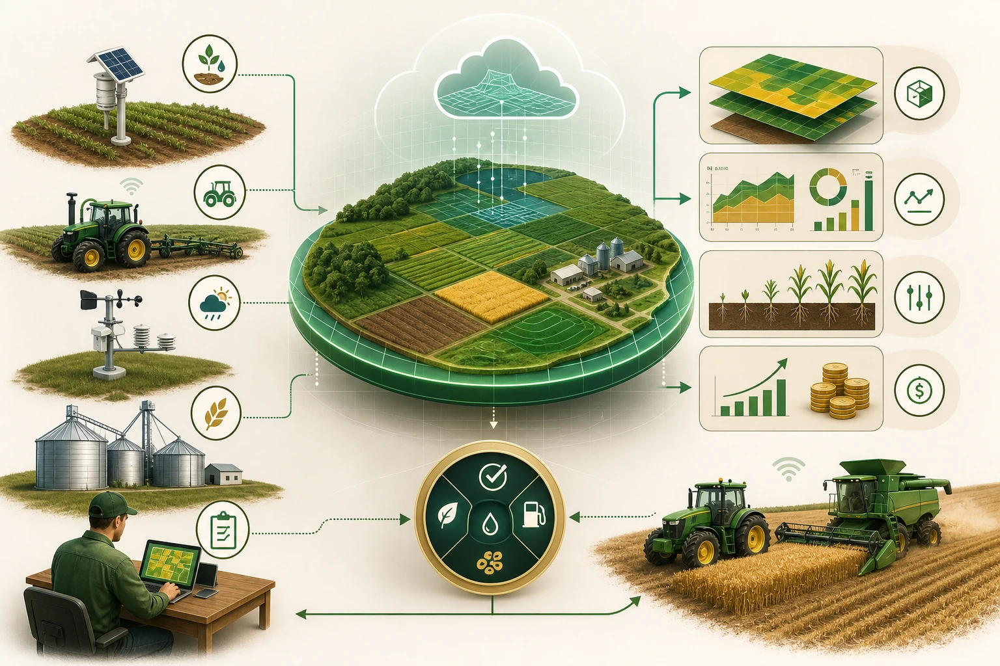

Quem acompanha agricultura digital já percebeu que a conversa mudou de nível neste ano. Em junho, a Embrapa Soja tratou a expansão da inteligência artificial no agro tropical como um caminho que passa por simulação de cenários e por gêmeos digitais. Em julho, a Embrapa Cerrados reforçou que sensores, conectividade, dados e modelos formam a base técnica desse avanço. Em paralelo, revisões acadêmicas publicadas entre junho e julho de 2026 passaram a descrever a migração de ferramentas isoladas de apoio à decisão para sistemas que tentam representar a fazenda em tempo quase contínuo. O termo parece novo para muita gente. O problema que ele tenta resolver, não.
Na rotina de Mato Grosso, o gerente não perde dinheiro porque falta apenas gráfico. Ele perde dinheiro quando a janela encurta e a equipe não consegue comparar o plano com o que de fato está acontecendo no campo. A plantadeira sai fora do ritmo, o abastecimento trava, um talhão molha antes do previsto, o pulverizador entra com dado cadastral errado, a colheita começa sem conciliar umidade, fila e capacidade de armazenagem, e a decisão chega tarde. O gêmeo digital ganhou espaço justamente porque promete encurtar essa distância entre evento real, leitura do sistema e resposta operacional.
O ponto central não é copiar a fazenda dentro de uma tela. É conseguir representar o mesmo processo com a mesma identidade, no mesmo relógio e com a mesma pergunta decisória.
Como fato publicado, a revisão Digital Twins in Agriculture: A Review, na revista Agriculture, define o gêmeo digital como uma representação virtual conectada a um ativo, processo ou sistema físico por fluxos de dados e modelos que permitem monitorar, testar e antecipar comportamento. Isso é bem diferente de guardar arquivos em um repositório ou de montar um painel bonito com mapas, telemetria e clima em janelas separadas. Um gêmeo digital de fazenda precisa sincronizar contexto, não apenas exibir camadas. Quando o operador muda a velocidade, quando uma frente de chuva derruba a janela, quando o sensor acusa desvio ou quando o silo aproxima o limite, o modelo virtual tem de reagir com a mesma identidade de talhão, equipamento, tempo e objetivo operacional.
É por isso que a pergunta certa não é se a fazenda já deve comprar um gêmeo digital. A pergunta certa é o que já existe para sustentar um. A própria Embrapa Cerrados foi direta ao afirmar, em 4 de julho de 2026, que a aplicação de IA no agro depende de quatro pilares: sensores, conectividade, dados e modelos. Minha inferência a partir dessa base é simples. Se um desses quatro pilares ainda é frágil, o projeto de gêmeo digital quase sempre vira uma reconciliação manual com embalagem sofisticada.
O primeiro teste é cadastral. Talhão com nome diferente em cada sistema, máquina sem identificador estável, operação registrada com horário divergente, aplicação sem vínculo claro com produto e dose, clima sem coordenada confiável e histórico de manutenção isolado em planilha já bastam para quebrar a promessa. O gêmeo digital só aprende quando o mesmo evento é reconhecido como o mesmo evento por todos os pontos da arquitetura. Parece detalhe de escritório, mas é o detalhe que decide se a simulação conversa com a fazenda real ou com uma cópia confusa dela.
O segundo teste é temporal. Um bom gêmeo digital não depende apenas de dados corretos. Ele depende de dados corretos no tempo certo. Telemetria de máquina, estação meteorológica, sensor de solo, registro de abastecimento, operação lançada no sistema e entrada de armazém precisam ser comparáveis no mesmo relógio operacional. Em safra, atraso de minutos pode ser irrelevante para uma análise histórica, mas já compromete decisão quando a meta é replanejar frota, trocar rota, segurar uma frente de pulverização ou puxar colheita antes da chuva. Como recomendação prática, eu começaria avaliando não a quantidade de dados disponível, mas o tempo gasto hoje entre o acontecimento e a leitura confiável desse acontecimento.

O terceiro teste é de identidade operacional. A revisão From Decision-Support Tools to Digital Twins, na revista Sustainability, mostra que a transição das ferramentas de apoio à decisão para gêmeos digitais ocorre quando o sistema fecha um ciclo entre observação, modelo, simulação e ação. Isso exige que a fazenda declare com clareza o que quer representar. É a logística da colheita? É a janela de plantio? É a pulverização com restrição de clima e abastecimento? É o uso de combustível por frente de trabalho? Sem essa escolha, a iniciativa vira coleção de integrações sem pergunta decisória. O software passa a consumir energia da equipe, e não o contrário.
Esse ponto merece cuidado porque o termo gêmeo digital está sendo vendido, às vezes, como se fosse previsão automática de tudo. Não é isso que as fontes sustentam. O que elas sustentam é que a agricultura está construindo formas mais integradas de representar processo e tomar decisão. Minha inferência aqui é restritiva, não expansiva. A maturidade do gêmeo digital tende a ser maior nos processos onde a fazenda já mede bem entrada, execução e resultado. Em uma operação de colheita mecanizada, por exemplo, faz mais sentido simular deslocamento, ritmo, umidade, fila e armazenagem do que prometer estimativa agronômica exata para qualquer talhão mal cadastrado ou mal amostrado.
O artigo Technical Limitations and Research Gaps of IoT and Big Data in Agriculture, publicado pela revista Agronomy em 16 de julho de 2026, ajuda a colocar o pé no chão. Os autores listam gargalos persistentes de interoperabilidade, qualidade dos dados, escala de processamento e combinação entre borda e nuvem. Isso importa muito no contexto brasileiro. Fazendas extensas da fronteira agrícola convivem com áreas de sinal desigual, equipamentos de idades diferentes, APIs limitadas por fabricante, terceirização parcial de operações e dependência de lançamentos manuais. Quando alguém promete um gêmeo digital pronto sem discutir essas fricções, o risco não está na tecnologia em si. O risco está na omissão do custo invisível de organizar o fluxo que alimenta a tecnologia.
Se eu estivesse avaliando fornecedor ou projeto ainda nesta semana, eu não pediria uma plataforma completa como ponto de partida. Eu escolheria um processo caro e repetitivo, com baixa tolerância a improviso. Janela de plantio, abastecimento de pulverização, colheita com fila de transbordo ou secagem pós colheita são bons candidatos.
A partir daí, eu desenharia o gêmeo mínimo daquele processo. Quais eventos entram. Quem lança o quê. Qual sensor ou sistema valida cada etapa. Qual atraso é aceitável. Onde a operação para se o dado falhar. Só depois eu perguntaria qual software, qual integração e qual modelo estatístico ou de IA realmente cabem nesse fluxo.
Essa ordem muda o orçamento. Em vez de concentrar investimento apenas na licença do sistema, a fazenda passa a enxergar o custo de integração, governança, conectividade, suporte, limpeza cadastral, treinamento e validação. Não é raro que o maior ganho apareça antes mesmo do modelo avançado, simplesmente porque o time reduz retrabalho, elimina conflito de versão, corrige cadastros e passa a medir o mesmo processo pelo mesmo identificador. Como fato publicado, a revisão da Smart Agricultural Technology trata justamente desses benefícios e barreiras em arquiteturas de gêmeos digitais com IA. Como recomendação, eu trataria qualquer projeto inicial mais como disciplina de dados aplicados à operação do que como compra de inteligência mágica.
Há também um ponto de método que merece ser separado com rigor. O que o sistema simula e o que ele prevê não são a mesma coisa. Simular significa testar cenários sob regras e variáveis explícitas. Prever significa estimar comportamento futuro com base em padrão histórico e sinais de entrada. Em muitos projetos agrícolas, os dois movimentos aparecem juntos, mas a governança é diferente. Um gerente pode confiar mais cedo em uma simulação de fila, deslocamento e capacidade porque o processo é altamente operacional. Já uma previsão de produtividade, atraso de doença ou resposta econômica depende de premissas mais delicadas. Misturar esses níveis de confiança acelera frustração.
Na prática, os melhores indicadores para acompanhar um projeto desses são menos glamorosos do que o marketing costuma mostrar. Eu observaria quantas reconciliações manuais ainda existem entre máquina, clima, operação e estoque. Mediria o tempo entre evento e decisão utilizável. Compararia a diferença entre o cenário sugerido e o resultado efetivo no campo. Acompanharia horas de máquina ociosa, aderência do operador ao procedimento, falhas de integração e frequência de cadastro corrigido depois da execução. Quando esses números melhoram, o gêmeo digital começa a deixar de ser conceito e passa a ser ferramenta.
Para soja, milho e algodão na fronteira agrícola, isso pode ter implicações bem concretas. Uma fazenda com várias frentes, armazém pressionado e janelas curtas pode usar um gêmeo operacional para testar redistribuição de máquina, troca de prioridade entre talhões, impacto de chuva sobre cronograma e saturação da capacidade interna. O valor não está em copiar o campo dentro do computador por vaidade tecnológica. O valor está em reduzir atraso de leitura e em ensaiar decisão antes que o erro vire custo real. Esse é o ponto em que o tema deixa de ser seminário e encosta no caixa da fazenda.
Se o termo apareceu no seu radar agora, eu evitaria dois extremos. O primeiro é tratar a ideia como moda vazia e perder o momento de organizar a base que já fará diferença em qualquer projeto futuro de dados. O segundo é assinar a plataforma antes de saber se a fazenda consegue produzir o mínimo de consistência que o modelo exige. Entre um extremo e outro, existe um caminho mais produtivo. Escolher um processo, fechar identidade cadastral, testar sincronização, medir atraso de informação, validar um cenário simples e só então ampliar. Quando isso acontece, o gêmeo digital deixa de ser promessa abstrata e começa a funcionar como ensaio operacional da safra.
Antes de contratar software novo, vale revisar cadastro, integração, atraso de informação e pontos em que a decisão ainda depende de conciliação manual.
Agricultura digital, do conceito à prática
Os livros de Melkezedeque Alves Lira ajudam a ampliar a leitura sobre dados, mecanização, telemetria e decisão operacional no campo.

Tecnologia, dados e transformação digital no agronegócio em linguagem aplicada à rotina da fazenda.
Comprar e-book →
Visão prática sobre como telemetria, automação e gestão de dados reorganizam processos e decisões dentro da fazenda.
Comprar livro →